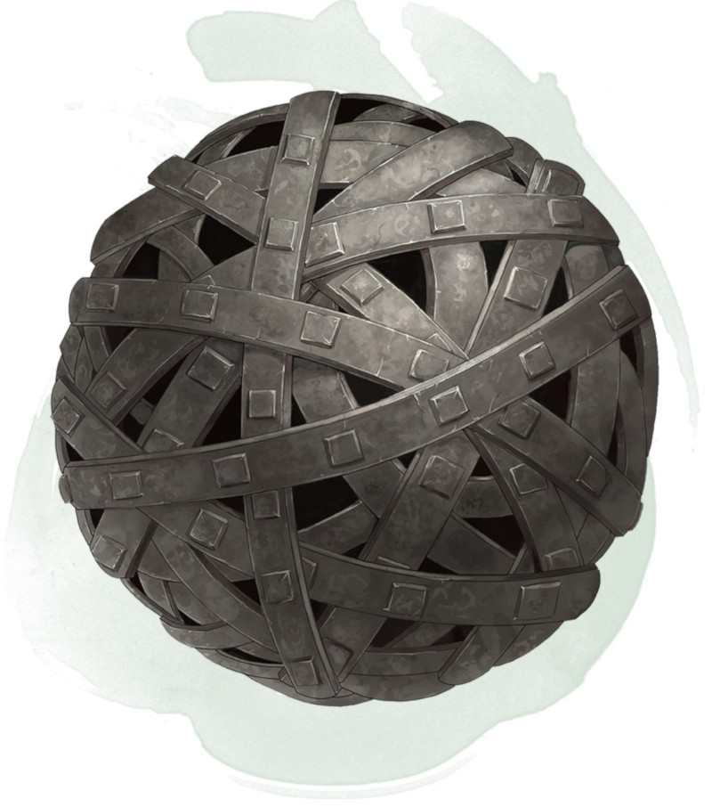

Iron Bands of Bilarro
Wondrous item, rare
This rusty iron sphere measures 3 inches in diameter and weighs 1 pound. You can use an action to speak the command word and throw the sphere at a Huge or smaller creature you can see within 60 feet of you. As the sphere moves through the air, it opens into a tangle of metal bands.
Make a ranged attack roll with an attack bonus equal to your Dexterity modifier plus your proficiency bonus. On a hit, the target is restrained until you take a bonus action to speak the command word again to release it. Doing so, or missing with the attack, causes the bands to contract and become a sphere once more.
A creature, including the one restrained, can use an action to make a DC 20 Strength check to break the iron bands. On a success, the item is destroyed, and the restrained creature is freed. If the check fails, any further attempts made by that creature automatically fail until 24 hours have elapsed.
Once the bands are used, they can't be used again until the next dawn.
Make a ranged attack roll with an attack bonus equal to your Dexterity modifier plus your proficiency bonus. On a hit, the target is restrained until you take a bonus action to speak the command word again to release it. Doing so, or missing with the attack, causes the bands to contract and become a sphere once more.
A creature, including the one restrained, can use an action to make a DC 20 Strength check to break the iron bands. On a success, the item is destroyed, and the restrained creature is freed. If the check fails, any further attempts made by that creature automatically fail until 24 hours have elapsed.
Once the bands are used, they can't be used again until the next dawn.
Dungeon Master´s Guide (SRD)
